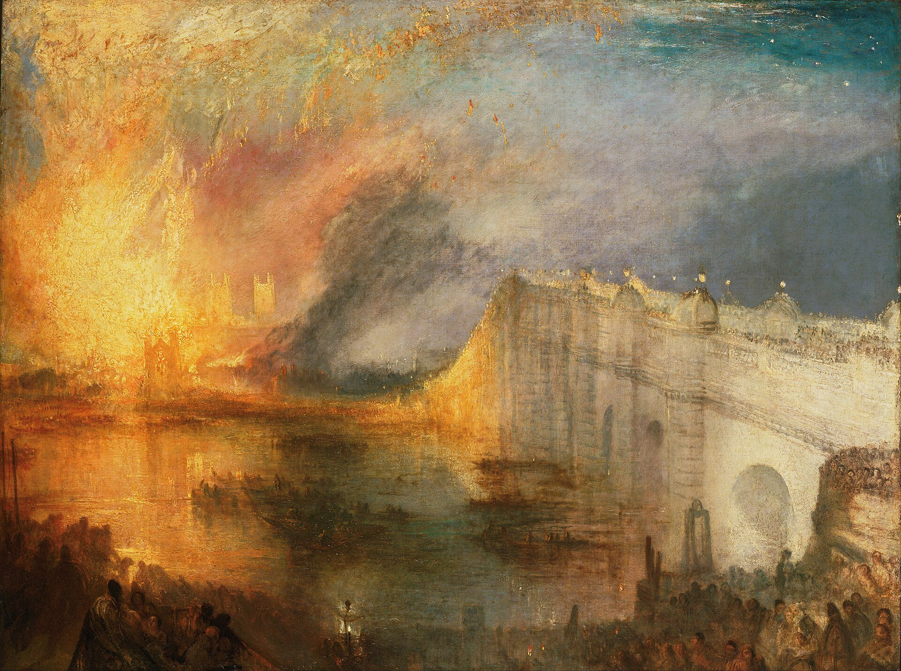
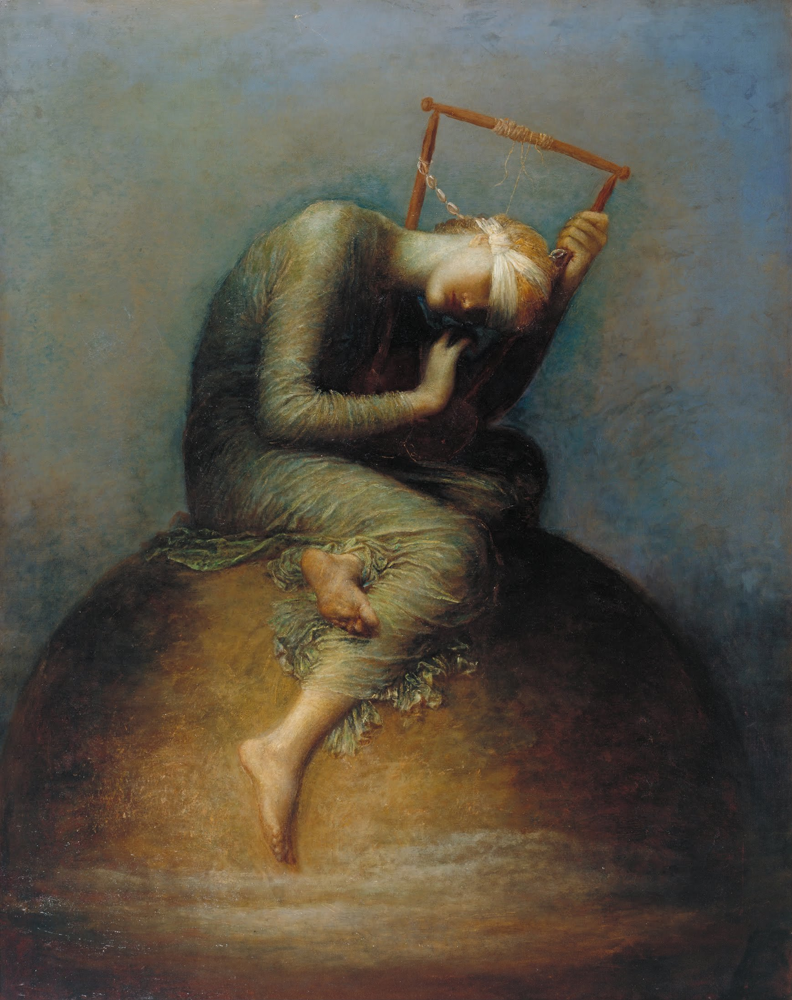

← 目次“Oh, these months! Well, never mind. Various things happened. One evening a grass shed full of calico, cotton prints, beads, and I don’t know what else, burst into a blaze so suddenly that you would have thought the earth had opened to let an avenging fire consume all that trash. I was smoking my pipe quietly by my dismantled steamer, and saw them all cutting capers in the light, with their arms lifted high, when the stout man with moustaches came tearing down to the river, a tin pail in his hand, assured me that everybody was ‘behaving splendidly, splendidly,’ dipped about a quart of water and tore back again. I noticed there was a hole in the bottom of his pail.
I noticed there was a hole in the bottom of his pail.
“I strolled up. There was no hurry. You see the thing had gone off like a box of matches. It had been hopeless from the very first. The flame had leaped high, driven everybody back, lighted up everything—and collapsed. The shed was already a heap of embers glowing fiercely. A nigger was being beaten near by. They said he had caused the fire in some way; be that as it may, he was screeching most horribly. I saw him, later, for several days, sitting in a bit of shade looking very sick and trying to recover himself; afterwards he arose and went out—and the wilderness without a sound took him into its bosom again.
The flame had leaped high, driven everybody back, lighted up everything—and collapsed. The shed was already a heap of embers glowing fiercely.
As I approached the glow from the dark I found myself at the back of two men, talking. I heard the name of Kurtz pronounced, then the words, ‘take advantage of this unfortunate accident.’ One of the men was the manager. I wished him a good evening. ‘Did you ever see anything like it—eh? it is incredible,’ he said, and walked off. The other man remained. He was a first-class agent, young, gentlemanly, a bit reserved, with a forked little beard and a hooked nose. He was stand-offish with the other agents, and they on their side said he was the manager’s spy upon them. As to me, I had hardly ever spoken to him before. We got into talk, and by and by we strolled away from the hissing ruins. Then he asked me to his room, which was in the main building of the station. He struck a match, and I perceived that this young aristocrat had not only a silver-mounted dressing-case but also a whole candle all to himself. Just at that time the manager was the only man supposed to have any right to candles. Native mats covered the clay walls; a collection of spears, assegais, shields, knives was hung up in trophies.
The business intrusted to this fellow was the making of bricks—so I had been informed; but there wasn’t a fragment of a brick anywhere in the station, and he had been there more than a year—waiting. It seems he could not make bricks without something, I don’t know what—straw maybe. Anyway, it could not be found there and as it was not likely to be sent from Europe, it did not appear clear to me what he was waiting for. An act of special creation perhaps. However, they were all waiting—all the sixteen or twenty pilgrims of them—for something; and upon my word it did not seem an uncongenial occupation, from the way they took it, though the only thing that ever came to them was disease—as far as I could see. They beguiled the time by back-biting and intriguing against each other in a foolish kind of way. There was an air of plotting about that station, but nothing came of it, of course. It was as unreal as everything else—as the philanthropic pretence of the whole concern, as their talk, as their government, as their show of work. The only real feeling was a desire to get appointed to a trading-post where ivory was to be had, so that they could earn percentages. They intrigued and slandered and hated each other only on that account—but as to effectually lifting a little finger—oh, no.
The business intrusted to this fellow was the making of bricks—so I had been informed; but there wasn’t a fragment of a brick anywhere in the station, and he had been there more than a year—waiting.
By heavens! there is something after all in the world allowing one man to steal a horse while another must not look at a halter. Steal a horse straight out. Very well. He has done it. Perhaps he can ride. But there is a way of looking at a halter that would provoke the most charitable of saints into a kick.
It was as unreal as everything else—as the philanthropic pretence of the whole concern, as their talk, as their government, as their show of work.
“I had no idea why he wanted to be sociable, but as we chatted in there it suddenly occurred to me the fellow was trying to get at something—in fact, pumping me. He alluded constantly to Europe, to the people I was supposed to know there—putting leading questions as to my acquaintances in the sepulchral city, and so on. His little eyes glittered like mica discs—with curiosity—though he tried to keep up a bit of superciliousness. At first I was astonished, but very soon I became awfully curious to see what he would find out from me. I couldn’t possibly imagine what I had in me to make it worth his while. It was very pretty to see how he baffled himself, for in truth my body was full only of chills, and my head had nothing in it but that wretched steamboat business. It was evident he took me for a perfectly shameless prevaricator. At last he got angry, and, to conceal a movement of furious annoyance, he yawned. I rose.
Then I noticed a small sketch in oils, on a panel, representing a woman, draped and blindfolded, carrying a lighted torch. The background was sombre—almost black. The movement of the woman was stately, and the effect of the torchlight on the face was sinister.

G. F. Watts と助手, Hope, 1886／Public domain／Commons
“It arrested me, and he stood by civilly, holding an empty half-pint champagne bottle (medical comforts) with the candle stuck in it. To my question he said Mr. Kurtz had painted this—in this very station more than a year ago—while waiting for means to go to his trading post. ‘Tell me, pray,’ said I, ‘who is this Mr. Kurtz?’
To my question he said Mr. Kurtz had painted this—in this very station more than a year ago—while waiting for means to go to his trading post. ‘Tell me, pray,’ said I, ‘who is this Mr. Kurtz?’